We scanned the home in 3D and analysed structure, humidity and surfaces. This guide explains what we saw, shows you options — and collects your answers and comments so the final quotation hits exactly right.
How to answer: tick the boxes and write directly on these pages, then photograph or scan them and send everything to Angelo via WhatsApp — +49 174 201 0380. You can answer partially and send the rest later.
What's new in v2 (after your feedback of 19 August): the kitchen water damage is now a full item — leaking stone-sink joints, the damaged cabinet below, and how we protect your quartz worktop during the works (section 08 and Q21). The roof-insulation text was clarified. Everything else is unchanged; if you already filled in pages of v1, you don't need to redo them.
01
Walk through your house in 3D
Everything we discuss here you can verify yourself in the tour — every measurement comes from this scan (±2 % accuracy).
Four main topics — two known from our visit, two additionally detected in the scan. Use the note lines to comment on any point.
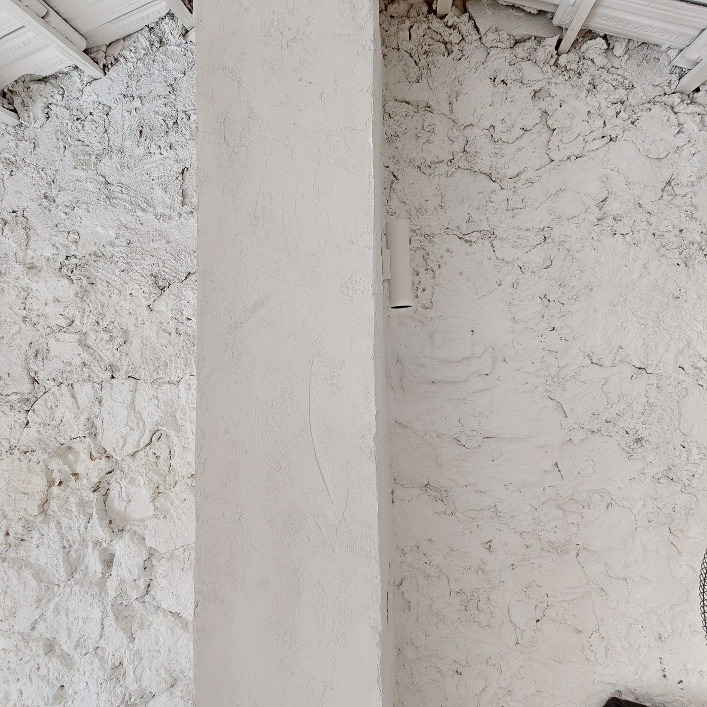
Priority
Rising damp & crumbling joints
A watercourse is believed to run beneath the building. Moisture rises through the stone walls: the joints in the upper band crumble and stains show. The lower walls were already lined in the past — and the problem is worse today. Best proof that lining alone doesn't cure it.
One roof beam is broken and a ceiling section sags; steel reinforcements from an earlier intervention exist. The current staircase doesn't meet building code (CTE DB-SUA).
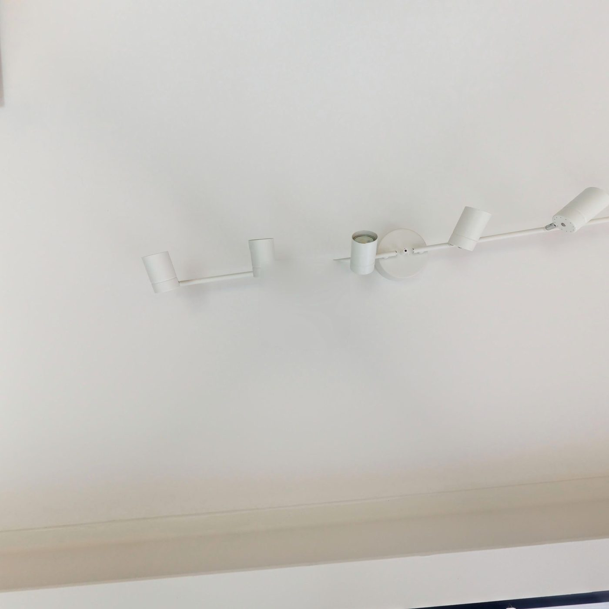
Additionally found
Hairline cracks in the kitchen ceiling
Fine cracks show in the kitchen ceiling. We'll map them during the diagnosis to distinguish cosmetic cracks from structural warnings.
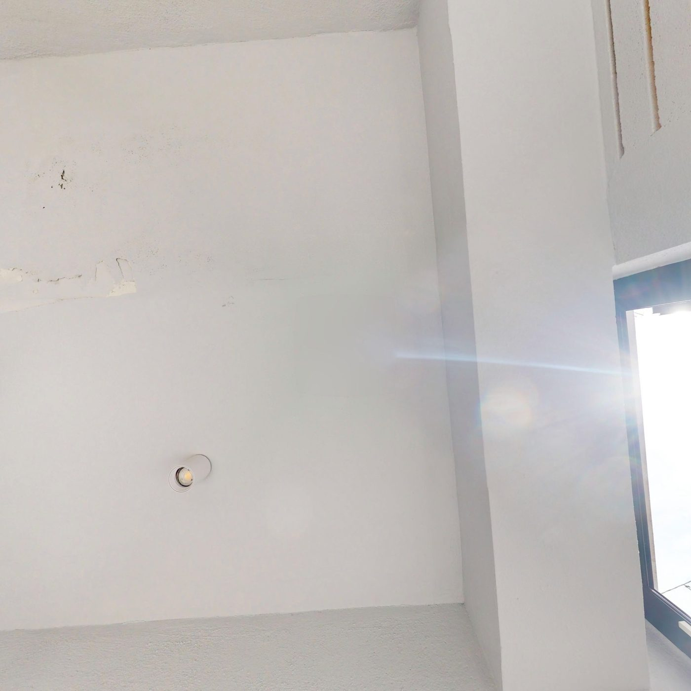
Additionally found
Outdoor bathroom with damp damage
The small patio bathroom/laundry shows peeling paint, stains and mould — and the WC sits outdoors. It deserves a place in the plan.
03
The humidity, explained honestly
You asked whether cladding the upper walls too would fix it. We checked this against the building code (CTE DB-HS 1), technical literature and an independent university study (UPM/CSIC). Short answer: cladding helps comfort — it doesn't cure.
„Cladding a damp wall is like an umbrella over a leak in the floor: the room looks dry, but the water keeps flowing."Conclusion of our technical verification
The critical point are the timber beams bearing inside the damp wall. One has already failed. Behind cladding, that process would continue invisibly. So: first have the bearings assessed and cut the cause — then, gladly, whichever finish you choose (including a ventilated dry-lining).
A short diagnosis: moisture & salt readings, 2–3 small inspection openings in the existing lower cladding, and a check of every beam bearing.
Cut the cause: the measure follows the diagnosis — typically a horizontal damp-proof barrier at the base of the walls.
Restore breathably: lime joints and renders, mineral paint.
Then the look you choose: restored exposed stone or a white ventilated dry-lining — both fine once the cause is treated.
Good to know — how your walls dry: thick stone walls that have stored water for years dry slowly after the cause is cut — many months, sometimes years, most of it in the first year or two; the Alicante climate helps. As they dry, salts travel to the surface: a ‚sacrificial' lime plaster catches them and is renewed when needed, like changing a dressing. Sandblasting, high pressure and acids are off-limits for your stone — cleaning is done gently. That's why the final finish is chosen later, from real sample areas.
Q1Do you know when and by whom the lower walls were lined, and what was installed? Any invoices, photos or documents?
Q2May we make 2–3 small inspection openings (10×10 cm, closed invisibly afterwards)?
Yes, agreedLet's discuss
Q3Any information or documents about the watercourse? Is the damp constant, or worse after rain?
Q4Were any damp treatments done in the past (injections, drainage, ventilation)?
04
Roof insulation — worth deciding with the structural survey
The roof is uninsulated: in winter heat escapes straight through it (expensive heating), in summer it pours in. Being honest: which insulation route makes sense depends on the structural survey and the roof build-up. Only if the roof covering has to be opened anyway is insulating from above the ideal moment (it preserves the visible timber ceiling). If the roof stays closed, there are interior options — with compromises on the visible timber ceiling and room height. After the engineer's check we present the sensible option(s) with numbers; the decision comes then, not now.
Our promise: no overengineering. We will only propose insulation in the variant the structural survey actually allows — with costs and estimated savings, so you can decide calmly.
Q5After the structural survey, shall we present the viable insulation option with numbers?
Yes, present itTell me moreNo
Q6The existing steel reinforcements on the beams: when and by whom? Any documentation?
Q7Happy for a structural engineer to check all beams and bearings first, and to fix the final scope after that?
Yes, agreedLet's discuss
05
The stone walls: which direction do you like?
Both options are technically sound — once the damp cause is treated. Tick your preference.
Current state
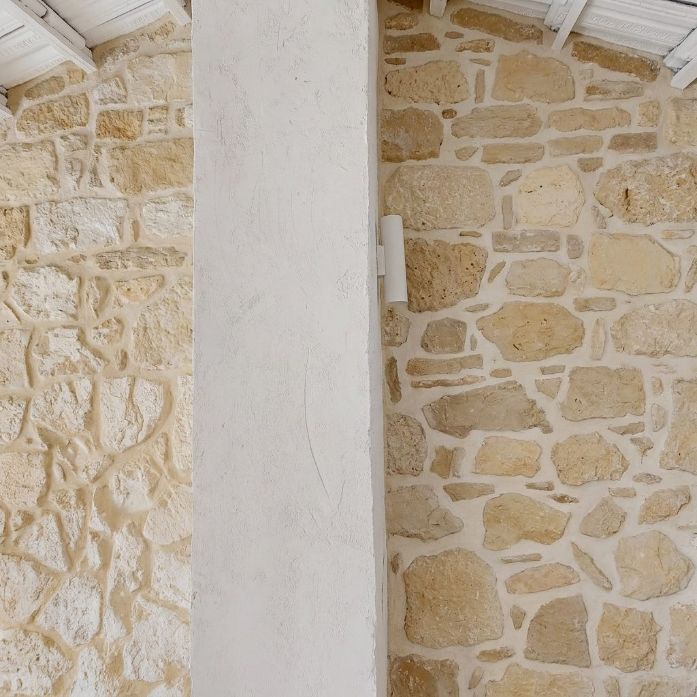
ARestored natural stone
Lime-mortar repointing, stone stays visible
Breathable — ideal against the damp
Character and authenticity
I choose A
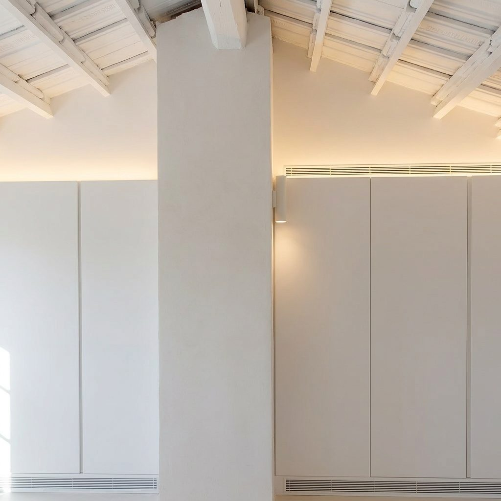
BWhite ventilated cladding + LED
Calm modern surface, warm indirect light
Ventilated system with grilles — the wall keeps breathing
Only after treating the cause; beam bearings stay inspectable
I choose B
I'm interested in a mix of A and B
Images: AI visualizations based on your real scan — a design preview, not a construction drawing.
Q9If A — the finish (whitewash or natural stone) is best decided after drying and a cleaning test: only then can you see how the stone truly looks, and lime-washing later is always possible and cheap. Which way do you lean today?
Decide after sample areas (recommended)WhitewashedNatural tone
06
The staircase: which direction do you like?
Safe and code-compliant — without giving up the storage.
Current state
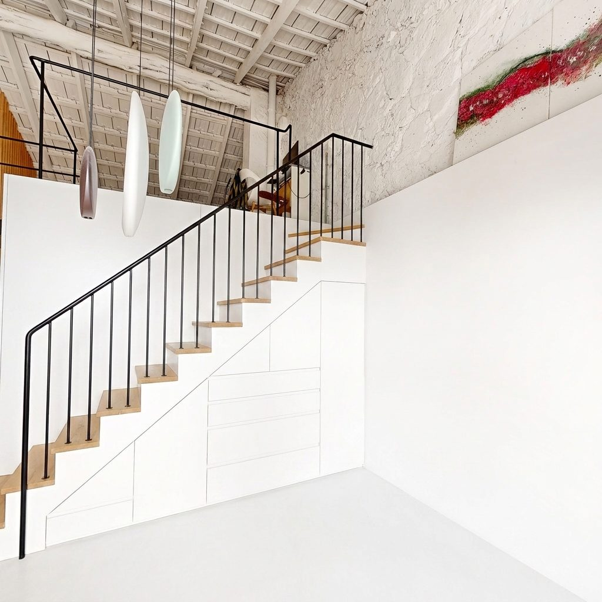
AStraight — like today, but safe
Same position, more comfortable oak treads
Continuous black steel handrail
All storage underneath preserved
I choose A
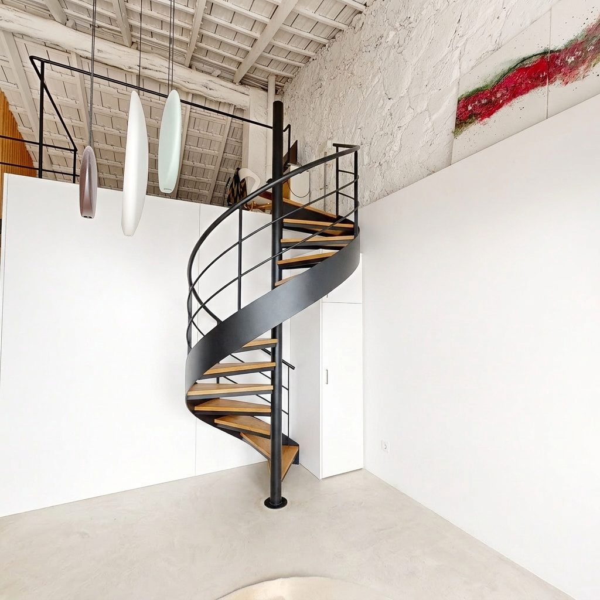
BSpiral staircase
Frees up floor space
Matte black steel + oak
Slim white column cabinet as storage
I choose B
Images: AI visualizations based on your real scan — a design preview, not a construction drawing.
Q11Material or style preferences (white + oak as visualized, or something else)?
Q12So we propose well: functional solution or design statement?
FunctionalDesign statement
07
Ideas to add with a tick
Creative consulting: things that are far easier and cheaper now — scaffolding up, walls open — than later. Tick whatever inspires you; we'll calculate it as an option.
Indirect lighting package
Warm hidden LED bands (2700 K) along the purlin and the gallery edge, dimmable with scenes — the option-B atmosphere, across the whole house.
Add to my plan
Handrail light line
LED integrated into the new staircase handrail: elegant, safe night-time orientation.
Add to my plan
Warmth for February
Efficient heat-pump splits (heat in winter, cool in summer), sized after the insulation decision; optional electric floor tempering in the bathroom.
Add to my plan
Permanently healthy climate
Controlled ventilation with gentle dehumidification: constant fresh air that also keeps your freshly restored walls dry.
Add to my plan
The patio as an extra room
Bioclimatic pergola and an outdoor kitchen around the existing BBQ: the patio becomes your second living room, 9 months a year.
Add to my plan
Smart home basics
Light scenes, presence, blinds: the wiring happens now while walls are open — later it gets expensive.
Add to my plan
08
Kitchen & bathroom — three points in the plan
Two detected in the scan, one you raised on 19 August with your photos — thank you, it's now a full item.
Kitchen ceiling cracks
We'll map them during the diagnosis. Do you know of more cracks (other rooms too)? Since when?
Q13
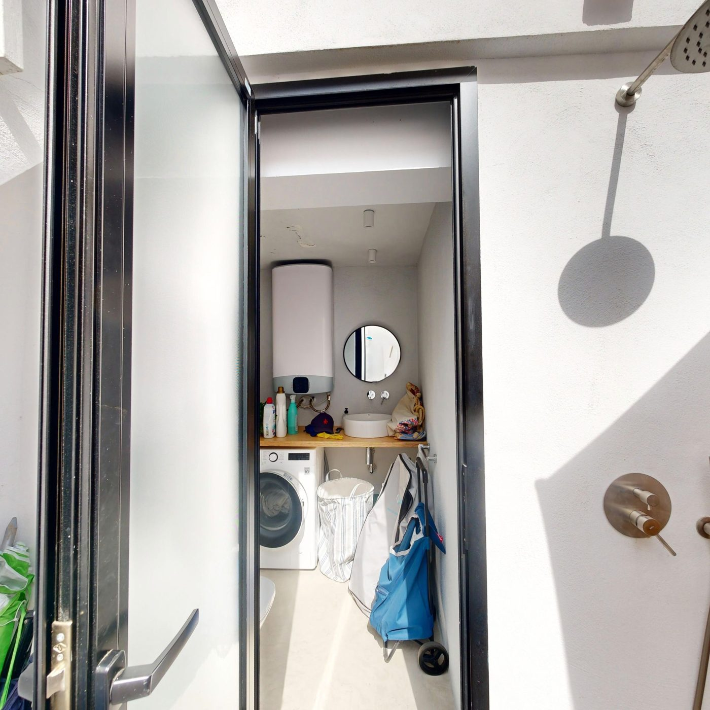
The patio bathroom/laundry
Peeling paint, damp and an open-air WC. What would you like to do?
Q14
Renovate properlyJust repair/sealAdvise me
New in v2 · from your photos of 19 August
Kitchen sink & cabinet — water damage
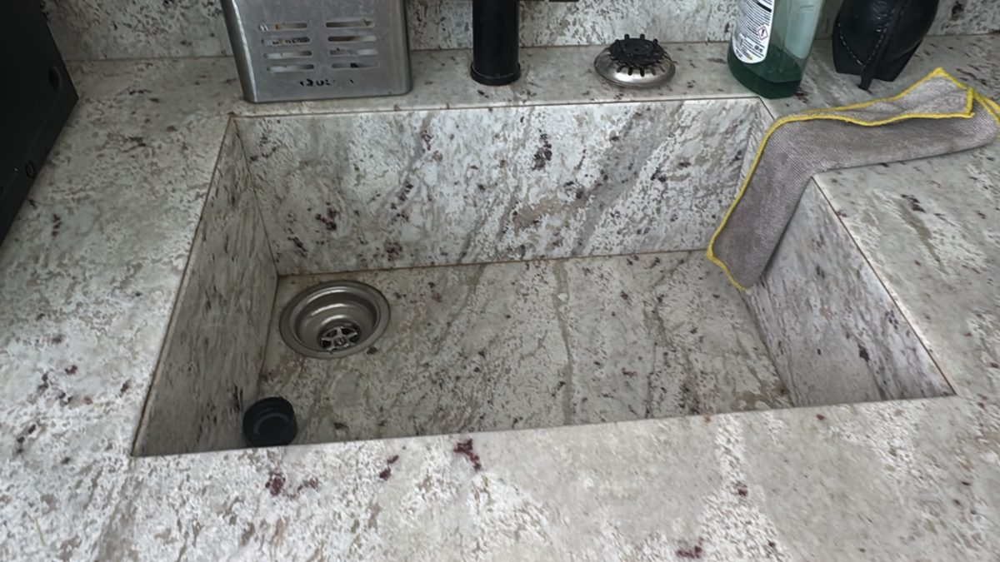
Integrated stone sink — built from several slabs
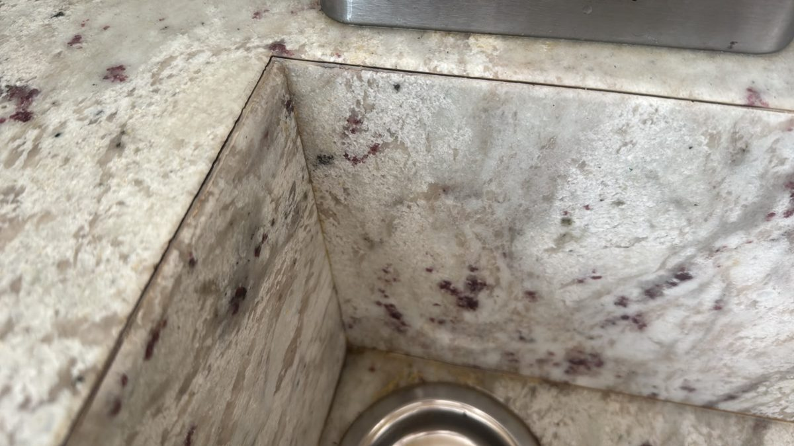
Joints unsealed — brown water marks
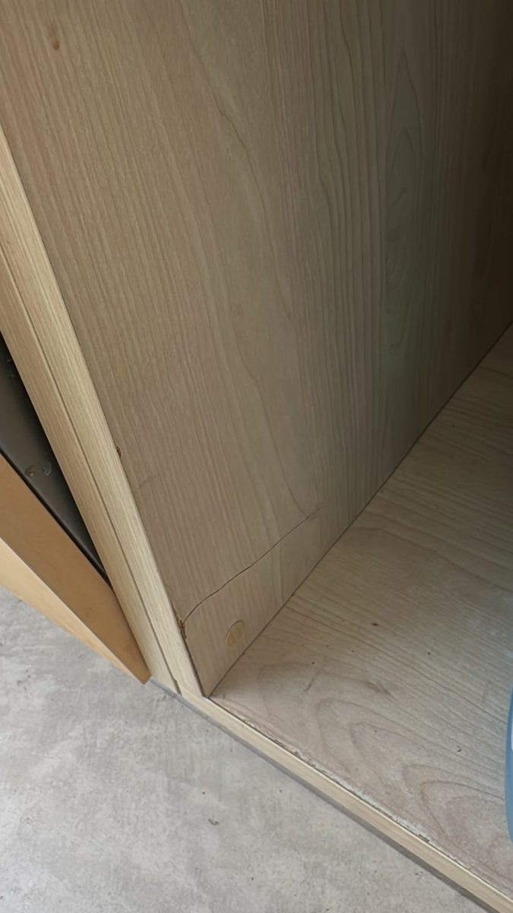
Cabinet board swollen and cracked
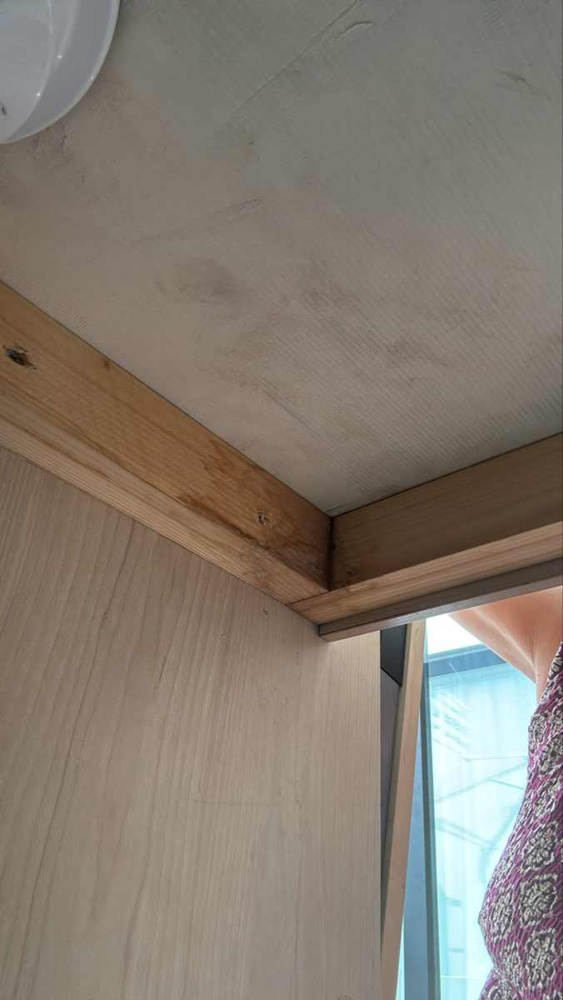
Support board & batten stained from below
What your photos show: water has been seeping through the unsealed slab joints for a while — the board at the base of the cabinet is swollen and cracked, and the support board and batten under the worktop are stained.
What we'll include: a properly sealed sink (see the three options below), replacement of the water-damaged cabinet under the sink, drying and checking of the board and batten, and a check of the pipework as a possible second source while everything is open. Because the ingress is still active, we suggest treating this in Phase 1. In the meantime: keep the cabinet dry and avoid water standing in the sink corners.
Your question about the quartz — answered now, not later. Quartz (engineered stone) is strong in daily use but brittle when cut in place or when a slab loses its support — and a sink cut-out is the weakest zone of any worktop. So we plan for it: before any cabinet work the worktop is temporarily supported on a frame; the basin is cut by a stone specialist with wet tools, never freehand; and we check for existing hairline cracks first. And we price the worst case up front: if the slab should crack despite these precautions, the fallback (replacing this worktop section in matching material) will be in the quotation as a fixed contingency that you only pay if it actually happens — no surprises later. Option C below avoids the cutting risk entirely.
Three ways to fix the sink — which do you prefer?
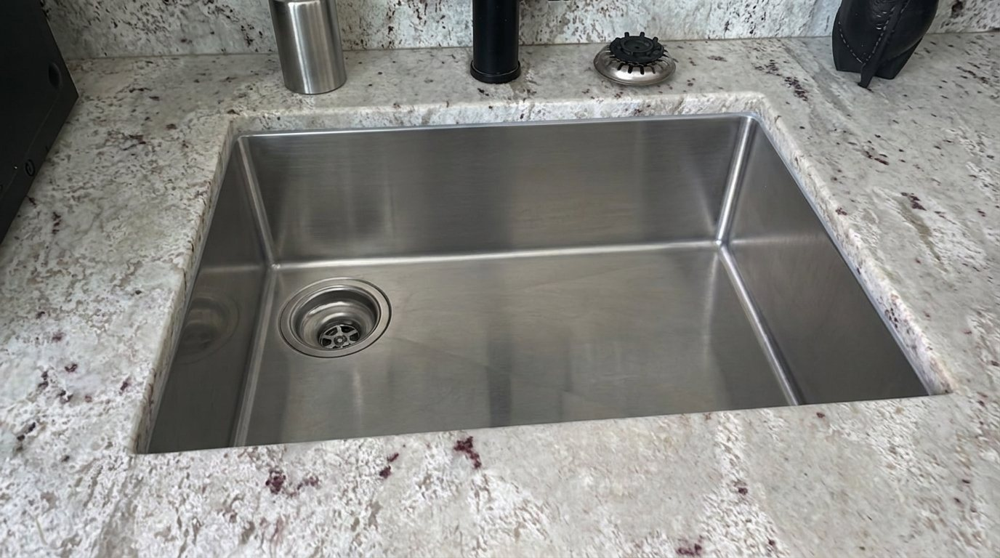
AStainless-steel sink
Stone basin cut out, steel sink set in
Practical, lowest cost of the two replacements
Solves the sealing problem for good
I choose A
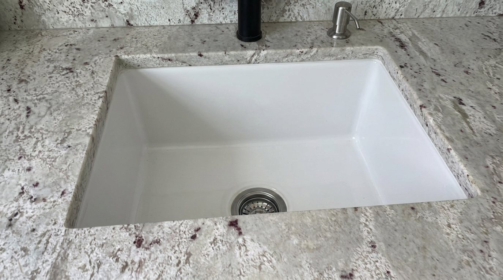
BFarmhouse / ceramic basin
Stone basin cut out, white ceramic basin set in
Design statement, higher cost
Solves the sealing problem for good
I choose B
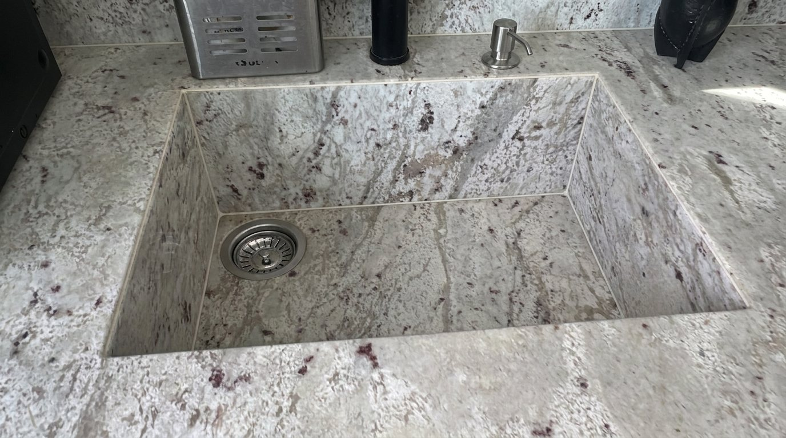
CKeep & re-seal
Stone basin stays; all joints re-sealed with epoxy
Lowest cost, no cutting risk to the worktop
Less durable — joints need checking over the years
I choose C
Images: AI visualizations based on your own photo — a design preview, not a construction drawing.
Q21Kitchen — anything else we should know? Floor or neighbouring cabinets affected? Sink size or tap preference?
09
Is everything covered? Check it
This is what the plan already includes. If anything's missing — write it below and it goes straight in.
Water-damaged cabinet under the sink: replace; dry board & batten; check pipework
Quartz worktop: protective procedure + fixed contingency priced up front
Q15Is anything missing from this list? What else concerns you or should be included?
Q16From mid-September: who can give us access to the house?
Q17Happy for our lawyer to file the administrative notification for you (simple e-signature power of attorney)?
Yes, agreedLet's discuss
Q18The chimney extraction fans…
OrderedDeliveredNot sure
Q19Which wall panels exactly did you want replaced?
Q20Shall we also quote the full repainting after the works?
Yes, agreedLet's discussNo
10
Send us more details as photos
Cracks, old documents, corners that worry you: photograph them with your phone and send them via WhatsApp along with these pages. Tick off what you've sent:
Lower wall lining up close (skirting area, transitions)
Documents or invoices from the earlier renovation (photograph them)
Kitchen ceiling cracks (close-up + overview)
Cracks in other rooms (if any)
Patio bathroom complete (ceiling, WC, walls)
Damp or mould spots you notice
Kitchen sink & cabinet — received 19 Aug, thank you ✓
Anything else you want to show us
Done? Review & send
Photograph or scan your filled-in pages and send them — together with your detail photos — to Angelo · WhatsApp +49 174 201 0380. We answer the same day. You can also answer partially and send the rest later — nothing gets lost.
Prepared personally for the owners of Calle de Belfast 17, Alicante · v2 · 19 August 2026. Observations from scan and site visit are warning signs, not a diagnosis; structural, damp and permit questions are confirmed by the qualified checks above. February 2027 is our planning target.